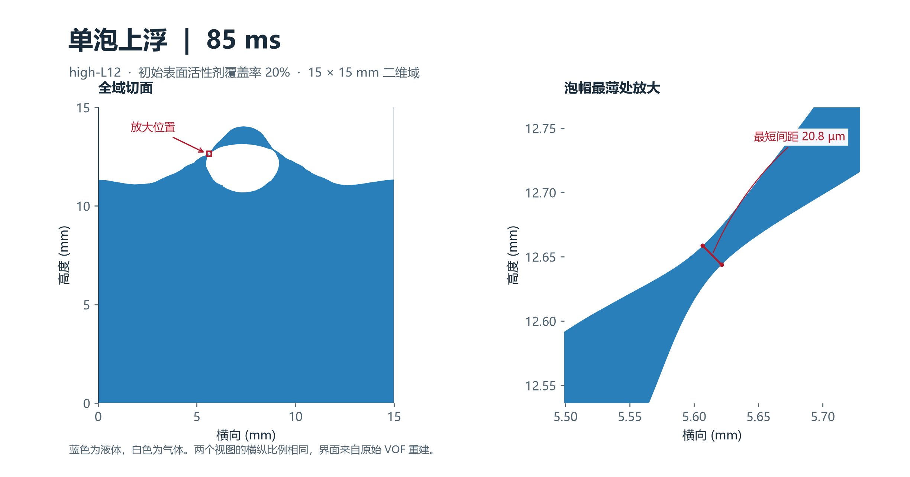
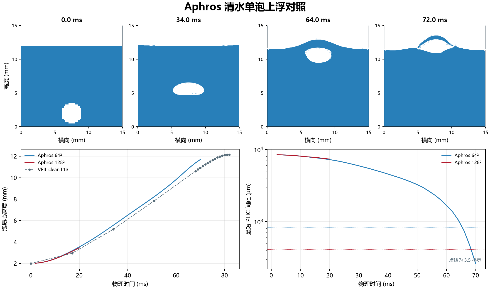
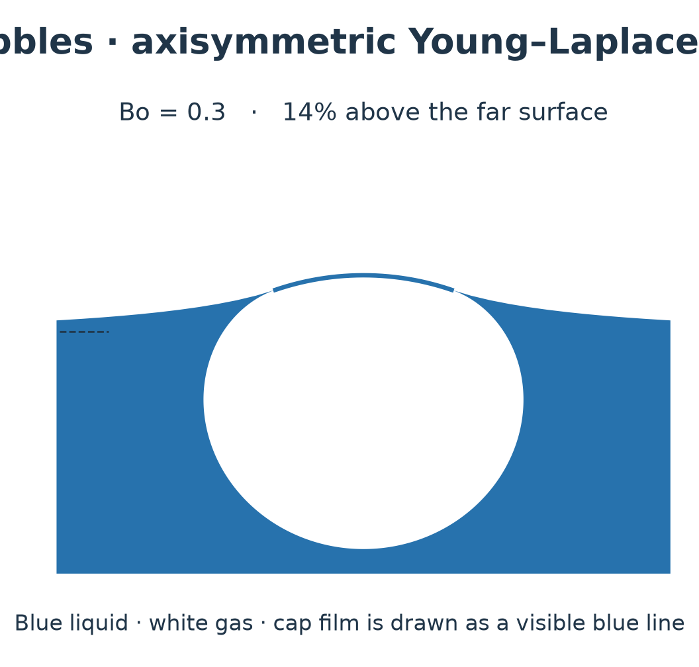
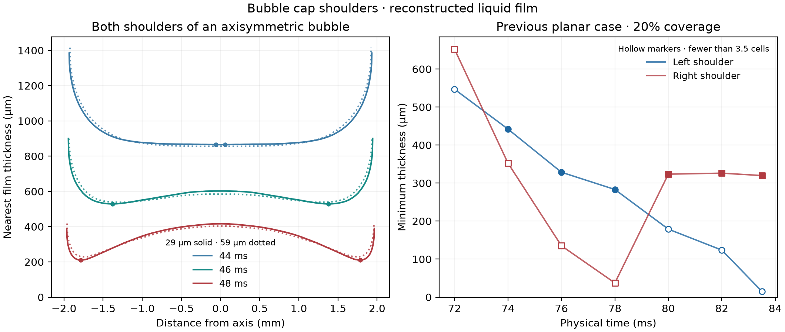
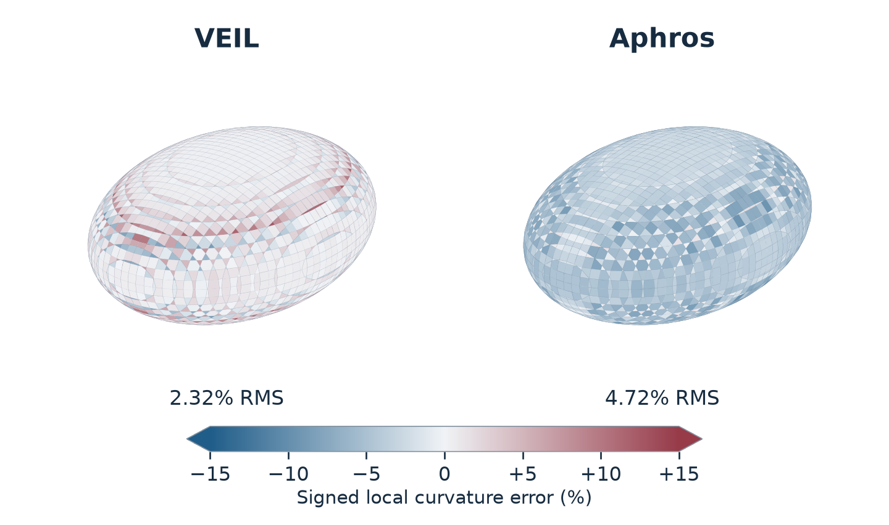
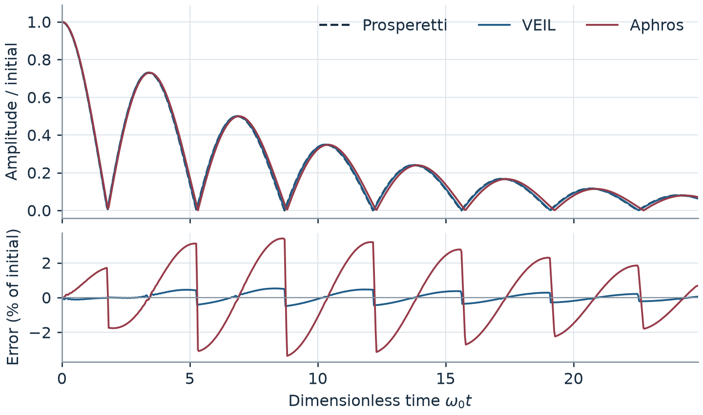

自适应 VOF 气泡上浮与液膜排液
在 15 × 15 mm 的二维水槽中，比较自由泡、贴壁泡和贴底泡的运动，追踪气泡接近自由液面时夹在两层气体之间的水膜。
当前贡献
- 用气域连通性配对界面。 分别识别泡内气体和顶部大气，避免把同一界面的折角误算成薄膜。
- 把细网格跟着排液区移动。 只在两条界面接近处加密，用同一检查点、同一物理时刻对照膜厚和液量。实测局部网格边长达到 7.32 µm。
- 分开验证变形、偏移和贴壁。 用单泡固定网格、单泡自适应和三泡对照区分变扁与横移，用静力平衡量化原位附着所需的接触角。
这里的贡献是测量和验证流程。流体求解采用 Basilisk 的 VOF、四叉树和表面张力离散。
最新单泡续算 · 2026-11-25
3 mm 单泡在 15 × 15 mm 二维水槽内上浮。清水与初始表面活性剂覆盖率 20% 的两组各用 L12、L13 对照。20% 表示气液界面单位面积的初始表面活性剂量为模型饱和值的 20%，对应约 71.0 mN/m。
| 算例 | 最细格 | 最后保存 | 最短间距 | 状态 |
|---|---|---|---|---|
| 清水 L12 | 3.66 µm | 76.559 ms | 12.8 µm | 膜厚保护（约 3.5 格） |
| 清水 L13 | 1.83 µm | 81 ms | 88.3 µm | 续算中 |
| 20% 覆盖率 L12 | 3.66 µm | 85 ms | 20.8 µm | 续算中 |
| 20% 覆盖率 L13 | 1.83 µm | 83 ms | 108.0 µm | 续算中 |
用 PLIC 重建的泡内气体与上方空气在表中各帧仍分隔。20% 覆盖率两档在同一时刻 83 ms 的最短间距为 57.0 和 108.0 µm，后段膜厚尚未收敛。105 ms 目标和物理破膜时间仍待验证。

为什么二维也算得慢
- 少量细格约束全域时间步。 显式表面张力的稳定步长随最小格距的 3/2 次方缩放。L12、L13 的实测步长约 0.328 和 0.116 µs，每 1 ms 约需 3,053 和 8,635 个子步。
- 每一步都要更新整棵树上的流场。 high-L12 从 84 到 85 ms 实测 1 小时 52 分，末帧约 4.5 万个叶格。续算每组用一个求解线程。独立短测中，隐式黏性迭代及残差约占 23% 的采样 CPU 时间，粗细层间的动量限制与树网格边界更新合计约 36%。
- 两条加速路径已短测。 同检查点小窗口按约 4 格保留液膜，两个算例提速 6.8–11.6 倍。另一同检查点短测，4 线程用时 45.4 s，单线程用时 96.2 s。两项都是短窗结果。 · 网格短测数据 · 毛细步长条件
动画与结果
- 左泡在 72.50–72.75 ms 之间与顶部气域数值连通。
- 中央泡在 95.75 ms 的最小垂向间隙约 96 µm，到 110 ms 仍与大气分开。底泡仍有约 2.90 mm 的贴底接触段。
- 200 个输出状态的液体面积最大相对漂移为 1.39 × 10⁻⁷。四个续算接点的网格和 PLIC 重建逐格吻合。
连通时间是有限网格上的诊断。左泡薄层已进入网格尺度，暂不能据此判断真实破膜时刻或寿命。


50 ms 时，固定网格和自适应网格上的单泡宽高比分别为 2.13 和 2.12，左右镜像差都小于 0.6%。三泡算例的中央泡宽高比为 2.19，并向左偏移 0.53 mm。
物理方程
两相材料与体积分数
使用不可压缩清水和空气。α 是液相体积分数，1 − α 是气相体积分数。用一套速度场 u 和压力场 p 表示两相，压力允许跨界面跳变，界面质量通量为零。
| 材料 | 密度 (kg/m³) | 动力黏度 (Pa·s) |
|---|---|---|
| 清水 | 998.2 | 1.002 × 10⁻³ |
| 空气 | 1.204 | 1.81 × 10⁻⁵ |
槽宽和高度均为 15 mm，初始水深 12 mm。中央圆泡与两颗贴壁半圆泡的名义直径同为 3 mm。初始速度为零，表面张力 σ = 0.0728 N/m，重力向下 9.81 m/s²。
中央、左壁和底泡的圆心依次在 (7.5, 2)、(0, 4) 和 (11.5, 0) mm。贴壁和贴底的两个圆由固体边界截成半圆。
动量、黏性与毛细力
法向 n 从液体指向气体，κ = ∇ₛ·n，δₛ 把毛细力限制在气液界面上。静止圆泡内的气压比同高度液压高 σ/R。VOF 用每格内的一条线段重建界面（PLIC）。液相与气相动量分别用与体积分数一致的几何通量输运，再相加恢复速度。
壁面和开放顶部
左右壁与底面无滑移、不可穿透，三相接触点的平衡接触角取 90°。顶部是开放大气边界，表压为零。边界速度分量取零法向梯度，液相体积分数边界值为零。
压力投影与时间步
u* 是压力投影前的面速度，ρ_f 用相邻单元液相分数的均值计算。黏性隐式推进，表面张力显式推进。续算采用多重网格预条件的广义共轭残差迭代，仍求解同一个压力方程。最终一段中，归一化压力残差 Δt²‖rₚ‖∞ 的最大值约为 1.00 × 10⁻⁶。
对均匀局部网格，速度约束的量级为 CFL·Δ/|u_f|，计算取 CFL = 0.35。把边长减半会把显式毛细时间步上限缩小为原来的 2⁻³ᐟ²。细区离开薄膜后可以重新粗化。
排液与局部网格
薄层内的液体流动由同一套两相方程求解。先判定两块气域，再沿竖直测线从 PLIC 界面得到泡顶 y_b 和液面 y_s。斜膜的垂向间隙与法向膜厚有区别，以下数值均为垂向间隙。
旁壁薄层覆盖整个测量带时，左壁无穿透、上下界面随液体运动，因此测量带里水的截面积减少对应从右端流出。面积和通量按单位出平面深度理解。
夹层接近时局部加密，其他区域根据界面和速度场调整。71.25 ms 的同一检查点对照中，14.65 和 7.32 µm 网格得到 64.4 和 62.4 µm 的间隙，相差 3.1%。这检验了一个时刻的局部间隙。低于约 3.5 个最细网格边长时记为网格尺度，后续仍保留在整段数值轨迹中。
贴壁静力平衡

把原接触点设在 y = 2.5 和 5.5 mm，并固定气泡截面积 A。沿气泡界面以弧长 s 积分，ψ 为切线角，Δp_c 是高度 y_c 处的泡内外压差。水和气的静水压梯度之差使曲率沿高度变化。
原接触位置需要上端约 76.2°、下端约 103.7°，平衡约 0.0346 N/m 的浮力。动态计算采用 90° 平衡接触角，左泡沿壁滑动。静力解给出原位停留所需的毛细抗力，真实杯壁能否提供它取决于材料的接触角滞后。
单泡与表面活性剂
清水单泡对照推进至 105 ms。泡内气域在 82–84 ms 的输出之间与大气发生数值连通。恒定表面张力只给出曲率方向的力。活性剂需要沿两条界面输运，并通过浓度梯度产生切向的马兰戈尼应力。
后续含活性剂对照的方程如下。Γ 为界面浓度，Dₛ 为表面扩散率，J 是体相与界面之间的交换，σ(Γ) 需要材料数据。
界面弹性和马兰戈尼应力可以减慢排液。接下来可用测得的浓度关系与清水对照比较水膜变薄速率。当前三泡结果使用恒定 σ，未包含这些输运方程。
Aphros 清水单泡上浮
同一个 15 × 15 mm 二维域内，3 mm 泡从 2 mm 高度释放，液深 12 mm。物性、初场、壁面与清水 VEIL 对照一致。
| 网格 | 格距 | 通过检查到 | 液面积最大相对漂移 | 气域数值连通区间 | 运行状态 |
|---|---|---|---|---|---|
| 64² | 234.4 µm | 72.00 ms | 2.72e-10 | 70.00–72.00 ms | 运行中 |
| 128² | 117.2 µm | 19.98 ms | 3.11e-10 | — | 运行中 |
| 256² | 58.6 µm | 0.00 ms | 0.00e+00 | — | 运行中 |

Aphros 用均匀网格、单层 PLIC 和粒子曲率。早期普通 PCG 的细档出现压力误差和异常速度。加上 SMG 预条件后，修补了每步预条件器未释放的问题，再按网格提高压力迭代上限。物理参数沿用清水设置。审计以实际写出的 VOF 和 PLIC 计液量、气泡质心、最短间距和气体连通。
在 68 ms，所示 Aphros 档的泡质心约 11.38 mm，VEIL 清水为 10.61 mm。 当前结果为阶段性对照，105 ms 窗口待验收。
均匀网格是上浮轨迹和形状的独立对照。256² 的格距为 58.6 µm。要让约 20.8 µm 的薄膜跨 3.5 格，15 mm 全宽需约 2,500 格。要直接解后段排液，局部加密更实用。该 Aphros 版本使用固定大小的结构网格块。 · Aphros
三维准静态参考用 Young–Laplace 平衡。直径 3 mm、半径定义的 Bond 数约 0.30 时，已有轴对称解给出泡帽高出远场液面约 0.55 mm、下部深入液面约 2.12 mm。原 VEIL 表活二维 85 ms 帧的截面峰值高出两侧液面约 3.32 mm。快速接近液面的泡会变形或反弹，这两个高度对应不同的几何、时间和表面条件，静态参考只约束近静止形状。表里的连通区间描述网格尺度拓扑。 · Young–Laplace / MVOF · 高速实验
轴对称静态参考图

其他对照与基准
单泡形状与顶部排液
在约 11.4 mm 的相同质心高度，平面泡宽 5.11 mm，轴对称泡宽 3.87 mm。48 ms 的轴对称切面上，膜从中心的 417 µm 减薄至肩部的 210 µm，向外又增至约 303 µm。44–48 ms 内，顶部测量区液量由 6.38 降到 2.57 mm³。


静态浮泡形状
约 4 格的加密策略
按内外界面最近距离加密，膜变厚后合并多余细格。显式毛细时间步随全域最小格距的 3/2 次方变化，回收细格能减轻全域的小步长限制。

| 同检查点短测 | 原版 → 改版 | 提速 | 末帧膜厚差 |
|---|---|---|---|
| 表活，约 138 µm | 165.58 → 14.29 s | 11.6× | 0.42% |
| 清水，约 23 µm | 221.84 → 32.70 s | 6.8× | 0.07% |
清水样本末帧跨 6.34 格，再粗一级只有 3.17 格，低于 3.5 格保护线。较长的表活试跑在 83.531 ms 达到 L12 保护，膜厚 12.80 µm，泡仍封闭。
VEIL / Aphros 曲率与毛细驻波基准
用固定形状的三维椭球泡测曲率，用二维黏性毛细驻波测表面张力、黏性和界面输运的耦合。VEIL 使用泡帽求解器的高度函数曲率，Aphros 使用粒子曲率。


| 指标 | 网格 | VEIL | Aphros 粒子曲率 |
|---|---|---|---|
| 椭球曲率 RMS | 323 | 5.58% | 5.39% |
| 椭球曲率 RMS | 643 | 2.32% | 4.72% |
| 驻波振幅 RMS | 16 格／波长 | 1.92% | 4.84% |
| 驻波振幅 RMS | 32 格／波长 | 0.62% | 2.41% |
| 驻波振幅 RMS | 64 格／波长 | 0.26% | 1.84% |
| 驻波周期 | 64 格／波长 | 0.16% | 0.94% |
在 64³ 椭球测试中，VEIL 的面积加权 RMS 约为 Aphros 的一半。局部相对误差的第 95 百分位为 8.01%（VEIL）和 7.11%（Aphros）。在最细驻波网格上，Aphros 的振幅 RMS 约为 VEIL 的 7.1 倍。该档液体面积最大相对漂移分别为 5.6 × 10⁻⁸（VEIL）和 1.4 × 10⁻¹⁵（Aphros）。
误差口径与审计数据
驻波使用等密度、等黏度和恒定表面张力，在相同的 735 个无量纲时刻与 Prosperetti 线性解比较。Aphros 的混合曲率在 64³ 椭球上的 RMS 为 16.39%，表中列粒子曲率。两套求解器沿用各自的初始化与时间步控制。泡帽排液和薄膜厚度需要单独对照。
VEIL 原始审计 (JSON) · Aphros 原始审计 (JSON) · 驻波共同时段复算 (JSON) · 驻波解析基准